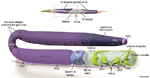
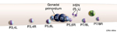
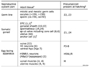

Handbook - Hermaphrodite
Reproductive System Overview see also Somatic Gonad Germ Line Egg-laying Apparatus
3 References
Figures  ReproFIG 1 - The adult hermaphrodite reproductive system  ReproFIG 2 - Precursor cells of the reproductive system  ReproTABLE 1 - Lineal origin of the reproductive system